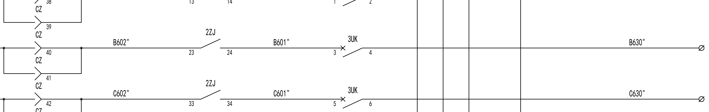

01 CAPTURE

Preserve the visible geometry
Native rendering produces legible local windows. Source provenance ties each question back to its drawing and circuit context.
Improving Electrical Schematic Understanding with the ELEC-VQA Dataset: A Comparative Study
Beyond reading labels: connect the components, respect the conditions, and support the decision with verifiable evidence.
Would bridging the open contact restore this path?
A line crossing is not always a connection. A contact symbol does not tell you its assumed state. A correct answer needs both topology and context.
ELEC-VQA brings engineering questions to native electrical CAD drawings. Every record pairs an image and a natural-language question with a short answer, compact evidence, and checks over a bounded terminal graph. The current sources are substation secondary-circuit drawings.
Variants are controlled wiring interventions, not additional independent circuit designs. Original windows can overlap within a drawing.
Related questions and edits stay with their source drawing. Primary test metrics use 2,064 questions, with ten T14 diagnostic controls reported separately.
Browse eight real reference examples.
All screenshots here come from original DWG windows.
Reference annotations are graph-checked; independent expert validation is not claimed. The examples illustrate dataset content, not live model inference.
One record, from native geometry
to a bounded, checkable explanation.

Native rendering produces legible local windows. Source provenance ties each question back to its drawing and circuit context.
A bounded terminal graph distinguishes external wiring from contact conduction. Hypothetical states and edits are explicit.
Connectivity, minimal closures and fault-observation checks support reference answers. Evidence remains tied to visible local scope.
Both adapters share a 7B backbone and the same training examples. The supervision target is the controlled difference.
Different questions need different metrics.
Explore the comparison without hiding the trade-offs.
With a common explanation prompt, E improves joint answer–evidence full credit over A. This is a gain in supported output, not universal answer accuracy.
585 originally unresolved ratings receive supplementary classifications; none is human-confirmed. Original non-null Qwen ratings are unchanged. Select the original-only view to inspect sensitivity.
Primary panel: 2,064 test questions from seven drawings and two projects; one training seed. Ten T14 controls are excluded from accuracy aggregates.
Automatic judge: Qwen2.5-32B-Instruct, reference-guided and identity-blinded. Answers and evidence are graded separately. Full credit is rating 3; partial credit is allowed only by the task rubric.
Supplementation: assistant/reference-based provisional classification of null ratings, including 85 recovered numerical suggestions from original judge attempts. This is a mixed-evaluator view, not an independently validated human score.
Uncertainty: drawing-cluster bootstrap intervals reflect seven-source resampling. They do not capture judge bias, reference errors, supplementary-rating validity or training-seed variation.
More explicit support does not automatically mean
more reliable reasoning in every condition.
A: 65.81%. Conditional on each model’s own correct-answer subset; this is not a same-subset causal comparison.
98 questions. Task composition and complexity are correlated; the effect is exploratory, not monotonic across all bins.
A: 61.86% on 97 state-invariant pairs. Successful explanations alone do not establish selective condition use.
Pair success requires both members to be correct. Shared questions and source circuits make these descriptive comparisons, not independent trials.
E4QA_04b45d17904f4265d252 · Original detail · Click for full window
With 3UK 3–4 closed and 2ZJ 24–23 open, would bridging 2ZJ connect 3UK:4 to CZ:41?
Actual recorded outputs. Both models fail in direct mode; only E succeeds here when an explanation is requested. This is a qualitative illustration, not proof that generated text causes correct reasoning.
The manuscript, a real-data sample, evaluation tables and original project code.
English PDF · Full comparative study
Open PDF ↗ REAL DATA8 original-window examples · Images + annotations
Download ZIP ↓ REPRODUCTIONOriginal project code · Ubuntu / H100 configuration
Download ZIP ↓ RESULTSFull-credit and semantic scores · Provisional overlay
Download CSV ↓Preliminary manuscript citation.
Author metadata will accompany the public release.
@misc{elecvqa2026,
title = {Improving Electrical Schematic Understanding
with the ELEC-VQA Dataset: A Comparative Study},
year = {2026},
note = {Research manuscript}
}